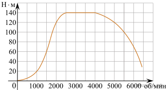
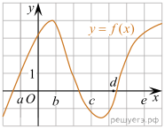
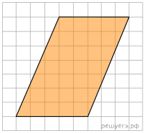
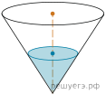
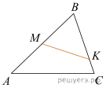
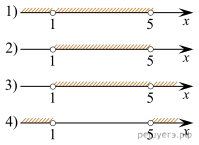

1. Одного рулона обоев хватает для оклейки полосы от пола до потолка шириной 1,6 м. Какое наименьшее количество рулонов обоев нужно купить для оклейки прямоугольной комнаты размерами 2,3 м на 4,1 м?
Ответ:
2. Установите соответствие между величинами и их возможными значениями: к каждому элементу первого столбца подберите соответствующий элемент из второго столбца.
А) объём воды в Азовском море
Б) объём ящика с инструментами
В) объём грузового отсека транспортного самолёта
Г) объём бутылки растительного масла
1) 150 м3
2) 1 л
3) 76 л
4) 256 км3
В таблице под каждой буквой, соответствующей величине, укажите номер её возможного значения.
| А | Б | В | Г |
Номер в банке ФИПИ: 9CDC25
Ответ:
3. На графике изображена зависимость крутящего момента двигателя от числа его оборотов в минуту. На оси абсцисс откладывается число оборотов в минуту, на оси ординат — крутящий момент в Н · м. Скорость автомобиля (в км/ч) приближенно выражается формулой υ = 0,036n, где n — число оборотов двигателя в минуту. С какой наименьшей скоростью должен двигаться автомобиль, чтобы крутящий момент был не меньше 120 Н · м? Ответ дайте в километрах в час.

Ответ:
4. Радиус вписанной в прямоугольный треугольник окружности можно найти по формуле где a и b — катеты, а c — гипотенуза треугольника. Пользуясь этой формулой, найдите b , если r = 1,2, c = 6,8 и a = 6.
Ответ:
5. В торговом центре два одинаковых автомата продают кофе. Вероятность того, что к концу дня в автомате закончится кофе, равна 0,3. Вероятность того, что кофе закончится в обоих автоматах, равна 0,12. Найдите вероятность того, что к концу дня кофе останется в обоих автоматах.
Ответ:
6. Турист подбирает себе экскурсионную программу. Сведения о некоторых музеях и парках, подготовленные туристическим бюро, представлены в таблице.
| Номер экскурсии | Достопримечательность | Время работы | Время (в часах) на проезд и посещение |
| 1 | Пушкин | 10:00–19:00 | 4 |
| 2 | Петергоф | 09:00–19:00 | 4 |
| 3 | Ораниенбаум | 10:30–17:30 | 5 |
| 4 | Пушкин, Павловск | 10:00–19:00 | 5 |
| 5 | Петергоф, Ораниенбаум | 09:00–17:30 | 6 |
| 6 | Пушкин, Петергоф | 10:00–19:00 | 6 |
Пользуясь таблицей, подберите экскурсионную программу так, чтобы турист посетил не менее трёх достопримечательностей за один день.
В ответе для подобранной программы укажите номера экскурсий без пробелов, запятых и других дополнительных символов.
Ответ:
7. На рисунке изображён график функции Точки a, b, c, d и e задают на оси Ox интервалы. Пользуясь графиком, поставьте в соответствие каждому интервалу характеристику функции или её производной.

А) (a; b)
Б) (b; c)
В) (c; d)
Г) (d; e)
1) значения функции положительны в каждой точке интервала.
2) значения производной функции положительны в каждой точке интервала.
3) значения функции отрицательны в каждой точке интервала.
4) значения производной функции отрицательны в каждой точке интервала.
| А | Б | В | Г |
Ответ:
8. Автолюбителям известно, что если в присутствии инспектора ГИБДД проехать на красный свет, то штраф неминуем. Выберите утверждение, которое непосредственно следует из этого знания.
1. Если вас оштрафовал инспектор, то вы проехали на красный свет.
2. Если вас не оштрафовали, вы не проезжали на красный свет.
3. Если вы не проезжали на красный свет, то вы не будете оштрафованы.
4. Если вы проехали на красный свет с непристёгнутым ремнём, то заметивший это инспектор ГИБДД вас оштрафует.
Ответ:
9. План местности разбит на клетки. Каждая клетка является квадратом размером 1 м × 1 м. Найдите площадь участка, изображённого на плане. Ответ дайте в квадратных метрах.

Ответ:
10. Два садовода, имеющие прямоугольные участки размерами 35 м на 40 м с общей границей, договорились и сделали общий прямоугольный пруд размером 20 м на 14 м (см. чертёж), причём граница участков проходит точно через центр. Какова площадь (в квадратных метрах) оставшейся части участка каждого садовода?
Ответ:
11. В сосуде, имеющем форму конуса, уровень жидкости достигает высоты. Объём жидкости равен 70 мл. Сколько миллилитров жидкости нужно долить, чтобы полностью наполнить сосуд?

Ответ:
12. В треугольнике ABC на сторонах AB и BC отмечены точки M и K соответственно так, что BM:AB = 1:2, а BK:BC = 4:5. Во сколько раз площадь треугольника ABC больше площади треугольника MBK ?

Ответ:
13. В треугольной пирамиде ABCD рёбра AB, AC и AD взаимно перпендикулярны. Найдите объём этой пирамиды, если AB = 2, AC = 15 и AD = 11.
Ответ:
14. Найдите значение выражения
Ответ:
15. В городе N живет 200 000 жителей. Среди них 15% детей и подростков. Среди взрослых жителей 45% не работает (пенсионеры, студенты, домохозяйки и т. п.). Сколько взрослых жителей работает?
Ответ:
16. Найдите значение выражения
Ответ:
17. Найдите корень уравнения
Ответ:
18. Каждому из четырёх неравенств в левом столбце соответствует одно из решений в правом столбце. Установите соответствие между неравенствами и их решениями.
А)
Б)
В)
Г)

В таблице под каждой буквой укажите соответствующий номер.
| А | Б | В | Г |